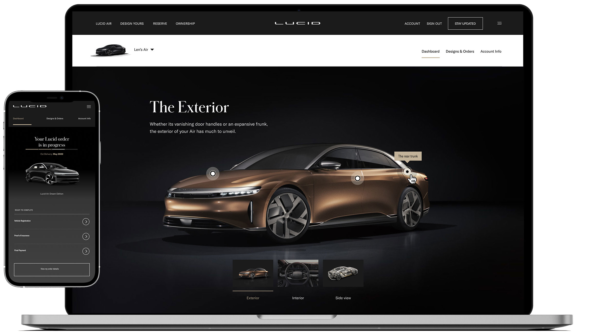
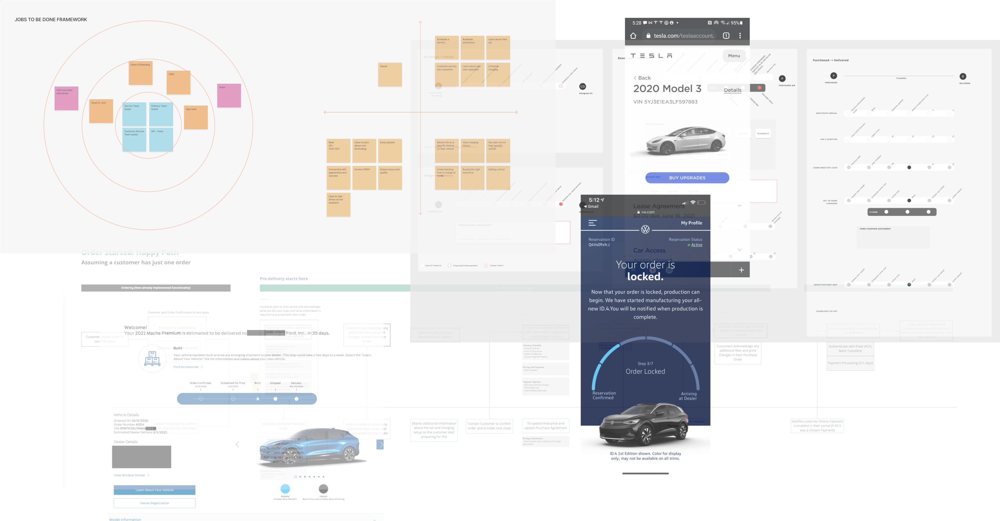
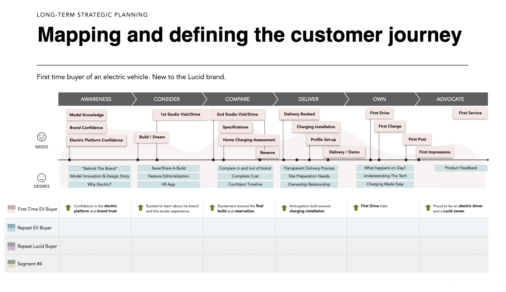
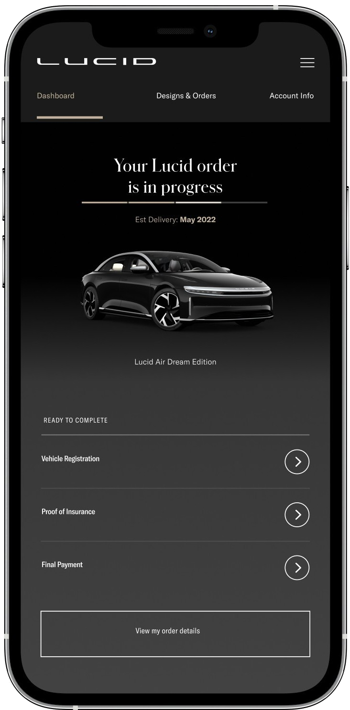
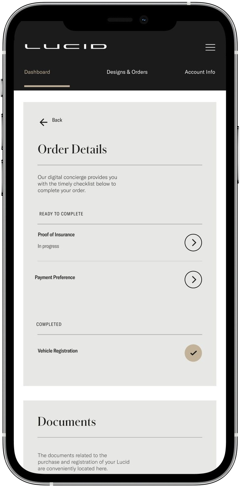
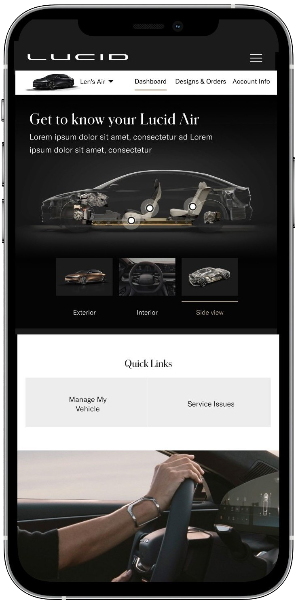
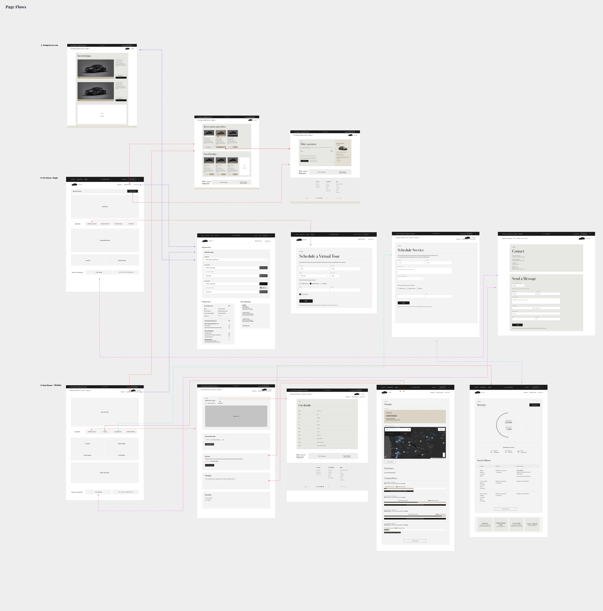
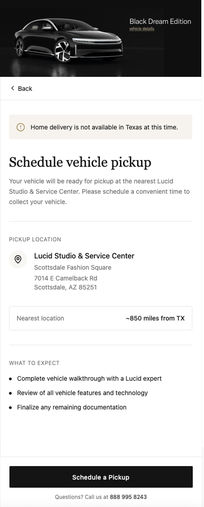
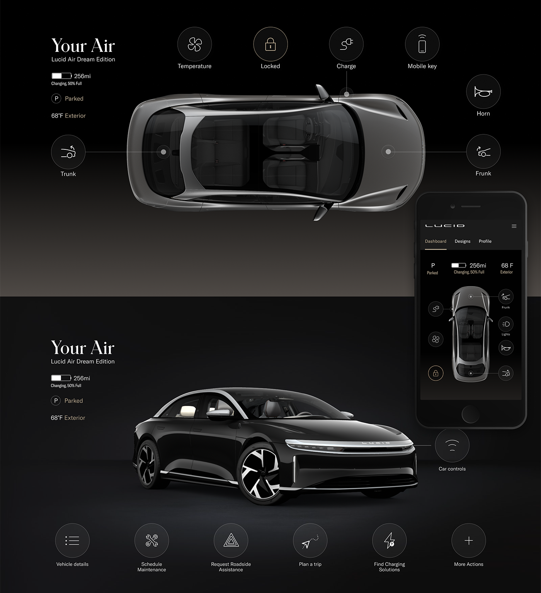

I led 0-to-1 product strategy for Lucid's ownership portal, translating complex stakeholder requirements (finance, delivery, customer support) into a unified dashboard experience that increased user-to-owner conversion by 46%.
Role: Product / UX Design Director
Duration: 10 months
Team: Cross-functional (design, finance, delivery, engineering, customer support)

Personalized Education, Pre-Delivery Engagement, and Market Expansion.
Technical: Integrated Salesforce data to personalize onboarding flows.
30%
Reduction in support calls during first 90 days
Design: Progressive task completion to build anticipation and habit formation.
Coordination: Partnered with finance and delivery ops for real-time data via Salesforce APIs.
46%
Conversion from reservation to purchase
Design: Position value props from performance specs to practical benefits.
Content: Shift imagery and messaging to appeal to diverse buyer segments.
25%
Increase in female interest in ownership.
Led comprehensive discovery phase coordinating 15+ stakeholder interviews across finance, delivery operations, and customer support to identify conflicting requirements and misaligned success metrics.
Facilitated service design workshops with cross-functional teams to map end-to-end customer journey from reservation through first year of ownership, uncovering critical gaps in pre-delivery engagement.
Conducted competitive analysis of Tesla, Ford, and VW ownership portals, identifying best-in-class patterns for personalization, delivery tracking, and community engagement.
Synthesized insights into actionable product strategy using JTBD framework, prioritizing features based on business impact and technical feasibility constraints.


Lucid's production timeline meant customers waited 6-10 months between reservation and delivery, a critical churn risk period. How do we keep customers engaged and build excitement when the product doesn't exist yet?
Rather than leaving customers in limbo, I designed a habit-forming dashboard that gave them reasons to return weekly: tracking their vehicle's progress, completing required tasks (financing, insurance), and learning about their future car.
The experience required integrating real-time data from multiple sources:






46%
Increase in reservation-to-purchase conversion
Reduced churn
Purchase-to pre-delivery engagement strategy: progressive task completion (financing, insurance, charging infrastructure, delivery scheduling) reduced drop-off by keeping customers engaged during 6-month production wait.
A/B tested personalized content vs. generic onboarding → personalized version showed 23% higher task completion rate.
51%
Increase in revenue per session
Driven by upsell opportunities surfaced at optimal moments in customization flow.
Data-informed placement of premium care package options based on user behavior patterns.
Shifted customer satisfaction from negative to positive
Transparent financing and rebate information (previously opaque) eliminated confusion.
Real-time delivery tracking reduced "Where's my car?" support inquiries by 30%.
Recognized as top-rated delivery experience in industry.